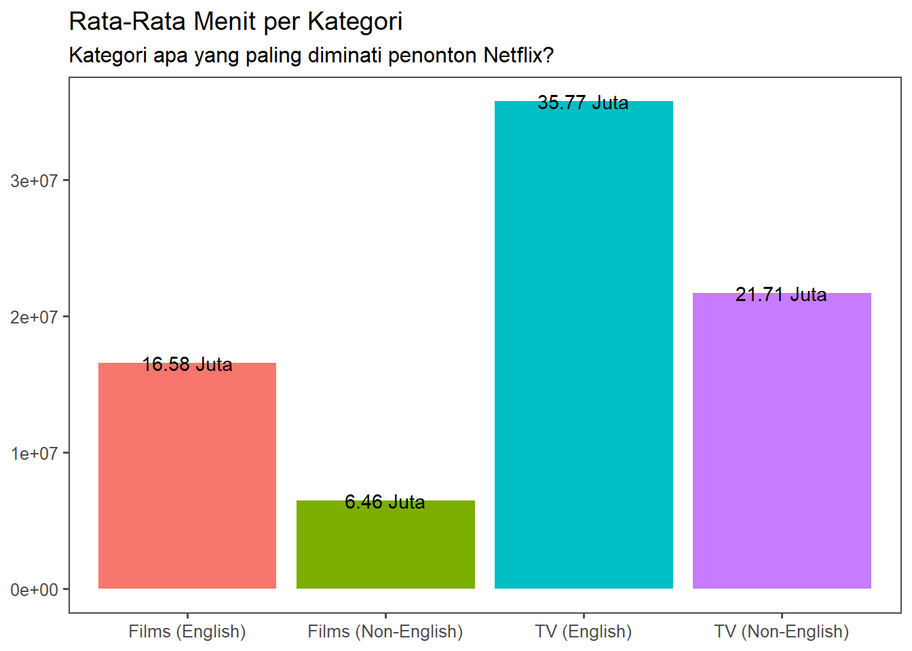
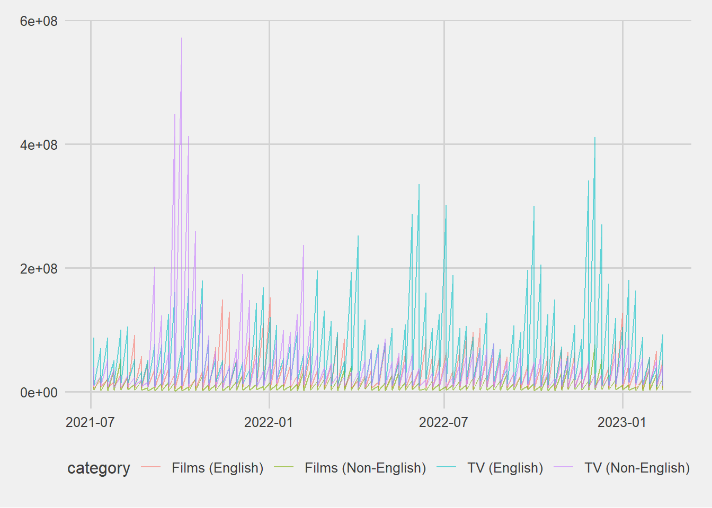
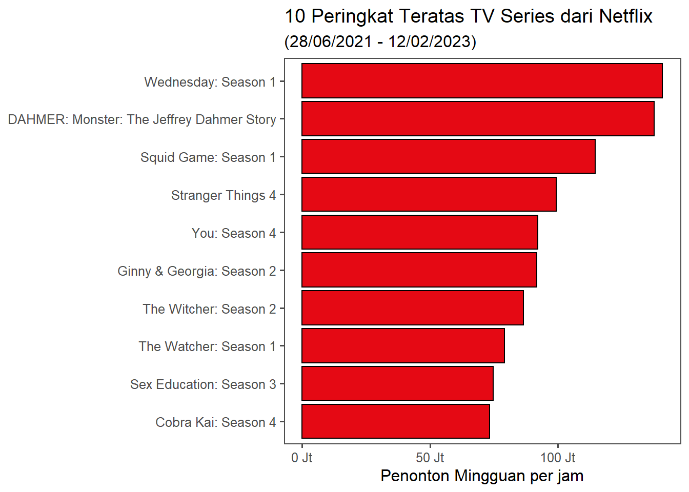
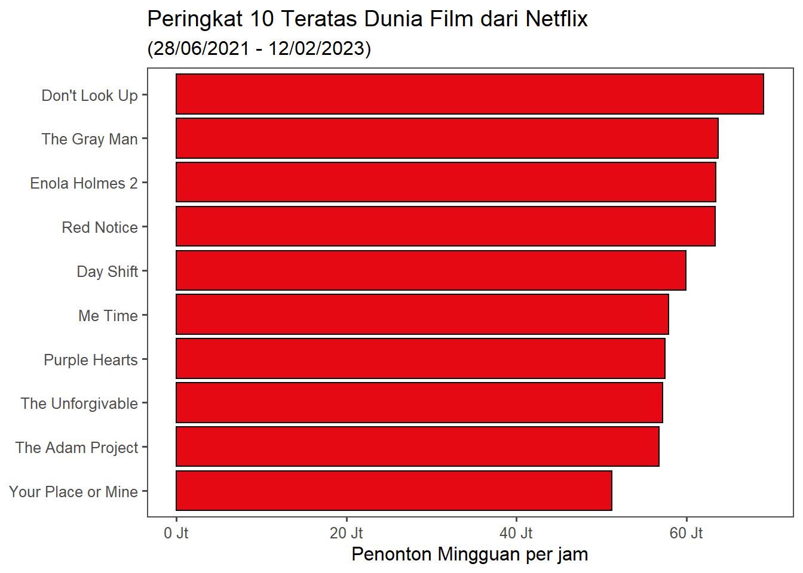
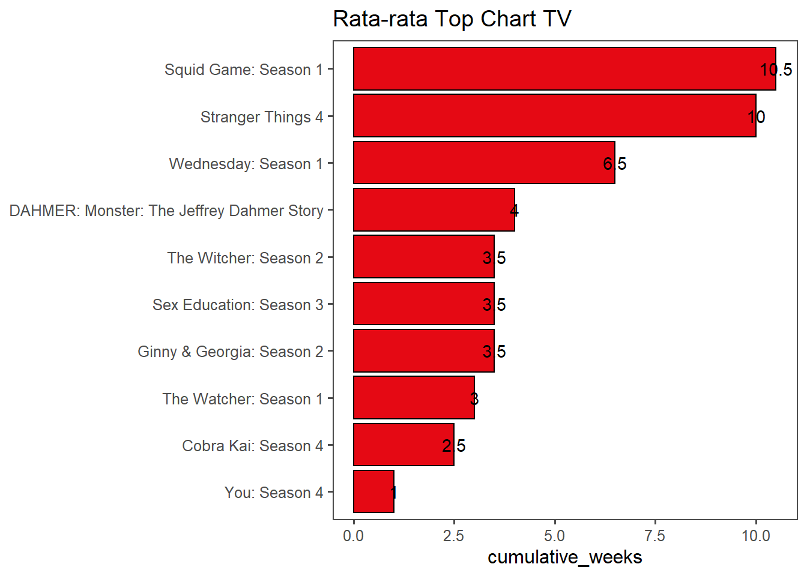
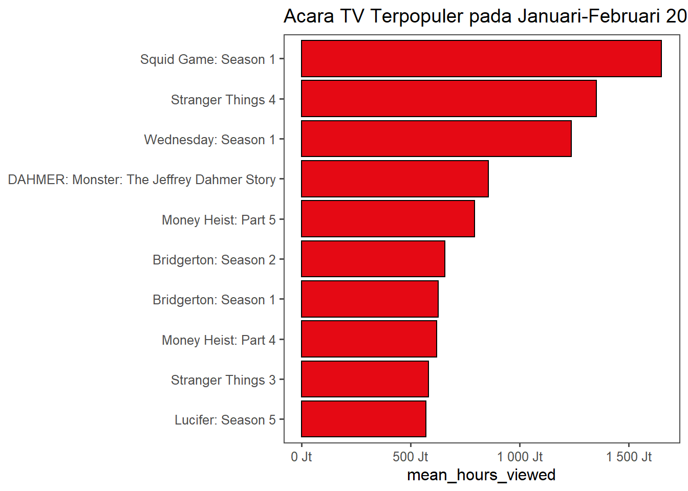
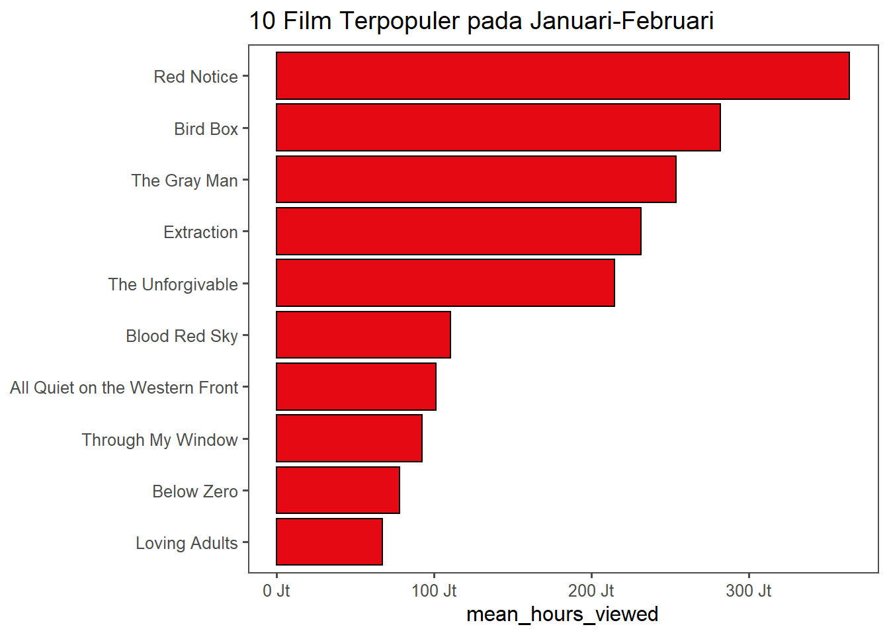
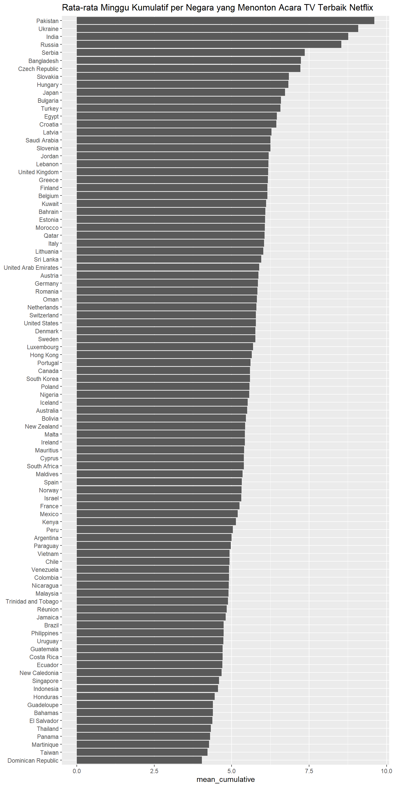
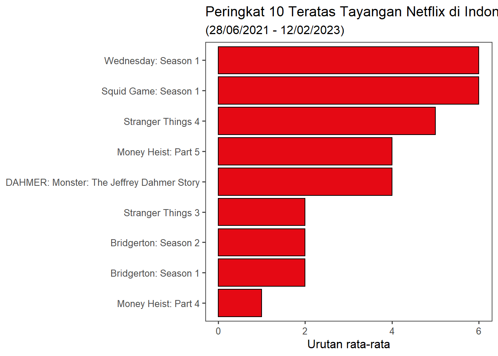

Attaching package: 'dplyr'The following objects are masked from 'package:stats':
filter, lagThe following objects are masked from 'package:base':
intersect, setdiff, setequal, union
Attaching package: 'dplyr'The following objects are masked from 'package:stats':
filter, lagThe following objects are masked from 'package:base':
intersect, setdiff, setequal, unionSiapa yang suka menonton tayangan di Netflix? Tentu saja banyak dari kita yang sudah mengetahui ketenaran karya-karya visual yang dipublikasikan oleh Netflix. Netflix sendiri merupakan salah satu layanan penyedia streaming film terbesar di dunia, yang tersedia di 190 negara dengan jumlah orang yang berlangganan lebih dari 230 juta pada Januari 2023.
Netflix telah menyediakan datasets dalam top10.netflix.com yang berisi rekaman data yang telah dikumpulkan sejak 28 Juni 2021, yang mencangkup empat kategori: film, TV series, film non-Inggris, dan TV series non-Inggris. Data yang disediakan adalah tiga buah berkas berformat .tsv, yakni:
all-weeks-countries.tsv : Dataset yang berisi data mingguan Netflix yang dibagi berdasarkan negara
country_name : nama negara
country_iso : singkatan negara
week : waktu (terbagi menjadi per minggu)
category : kategori, yang dibagi menjadi empat
weekly_rank : peringkat mingguan
show_title : judul tayangan
season_title : judul musim tayangan (untuk kategori TV Series dan TV Series Non-English)
cumulative_weeks_in_top_10 : jumlah minggu tayangan tersebut ada di peringkat 10 teratas
all-weeks-global.tsv : Dataset yang berisi data Netflix secara global
week : waktu per minggu
category : kategori
weekly_rank : peringkat mingguan
show_title : judul tayangan
season_title : judul musim tayangan
weekly_hours_viewed : jumlah tayangan per jam per minggu
cumulative_weeks_in_top_10 : jumlah minggu tayangan tersebut ada di peringkat 10 teratas
most_popular : Dataset yang berisi tontonan Netflix yang paling poluler 28 hari sebelum dataset tersebut dirilis (14 Januari 2023 - 12 Februari 2023)
category : kategori
rank : peringkat
show_title : judul tayangan
season_title : judul musim tayangan
hours_viewed_first_28_days : jumlah tayangan per jam dalam 28 hari ke belakang
Dplyr sudah mengenali tipe data setiap kolom tersebut dengan benar, kecuali data week. Maka, kita akan mengubah tipe data tersebut dari string menjadi date.
# Membenarkan data
weeks_global$week <- as.Date(weeks_global$week)Mari kita mulai analisis dengan mengetahui jumlah jam tontonan di Netflix berdasarkan kategorinya.
# Mengetahui rata-rate menit per kategori
world_ctg <- weeks_global %>%
group_by(category) %>%
summarize(mean_world = mean(weekly_hours_viewed)) %>%
arrange(desc(mean_world))
ggplot(world_ctg, aes(x=category, y=mean_world)) +
geom_col(aes(fill = category), show.legend = FALSE) +
geom_text(aes(label = paste(round(mean_world / 1e6, 2), "Juta"))) +
labs(x = NULL,
y = NULL,
title = "Rata-Rata Menit per Kategori",
subtitle = "Kategori apa yang paling diminati penonton Netflix?") +
theme_few()
Dari plot di atas dapat diketahui bahwa penonton acara TV di Netflix memiliki tayangan yang paling banyak ditonton, yaitu rata-rata sebanyak 35,8 juta jam! Hal ini tentu saja tidak mengherankan, karena tayangan TV memiliki beberapa episode per musimnya. Tetapi, karya-karya berbahasa Inggris menempati dua urutan teratas dibandingkan non-Inggris.
Selanjutnya, kita akan mencoba untuk menemukan rata-rata tayangan per jam Netflix per minggunya.

Tentunya, tayangan TV berbahasa Inggris mendominasi angka rata-rata tinggi.
Tetapi uniknya, plot di atas menunjukkan bahwa pada September 2021 sampai Oktober 2021, jumlah rata-rata tontonan per minggu per jam TV (Non-English) mendapati kenaikan yang sangat signifikan, bahkan belum ada kategori lain yang bisa menandinginya dalam tahun-tahun setelahnya. Ada apakah gerangan?
Sekarang mari kita menganalisis acara TV. Popularitas diukur dari total angka jam penonton Netflix sedunia menonton tiap judul tayangan.
`summarise()` has grouped output by 'season_title'. You can override using the
`.groups` argument.top_tv_showsggplot(top_tv_shows, aes(x=reorder(season_title, mean_tv), y=mean_tv)) +
geom_col(fill='#E50914', color = '#000000') +
labs(x = NULL,
y = "Penonton Mingguan per jam",
title = "10 Peringkat Teratas TV Series dari Netflix",
subtitle = "(28/06/2021 - 12/02/2023)") +
coord_flip() +
theme_few() +
scale_y_continuous(labels = unit_format(unit = "Jt", scale = 1e-6))
Penemuan di atas memberikan hasil yang menarik: Sembilan dari sepuluh tayangan TV series adalah TV Series berbahasa Inggris, sementara hanya satu (Squid Game) yang merupakan TV series non-Inggris.
Selain itu, ditemukan juga bahwa line plot yang menunjukkan tayangan TV series non-Inggris yang menjulang tinggi dari 2021/09/26 sampai 2021/10/17 disebabkan oleh populernya Squid Game: Season 1.
`summarise()` has grouped output by 'show_title'. You can override using the
`.groups` argument.top_film# Membuat plot
ggplot(top_film, aes(x=reorder(show_title, mean_film), y=mean_film)) +
geom_col(fill = '#E50914', color = '#000000') +
labs(x = NULL,
y = "Penonton Mingguan per jam",
title = "Peringkat 10 Teratas Dunia Film dari Netflix",
subtitle = "(28/06/2021 - 12/02/2023)") +
coord_flip() +
theme_few() +
scale_y_continuous(labels = unit_format(unit = "Jt", scale = 1e-6))

Diluar dari temuan Peringkat 10 Teratas TV Series di Dunia dari Netflix, kita akan menemukan bahwa Squid Games: Season 1 menempati peringkat teratas jika kita menghitungnya dari cumulative_weeks_in_top_10 dengan rata-rata 10.5 minggu. Coba bandingkan dengan Wednesday: Season 1 yang menjadi acara dengan jumlah jam paling banyak, memiliki angka kumulatif mingguan 6,5 minggu, serta DAHMER yang memiliki angka kumulatif mingguan berjumlah 4.
`summarise()` has grouped output by 'show_title', 'season_title', 'category'.
You can override using the `.groups` argument.most_popular_show# Membuat plot popular_show
ggplot(most_popular_show, aes(x = reorder(season_title, mean_hours_viewed), y = mean_hours_viewed)) +
geom_col(fill = '#E50914', color = '#000000') +
labs(x = NULL,
title = 'Acara TV Terpopuler pada Januari-Februari 2023') +
coord_flip() +
theme_few() +
scale_y_continuous(labels = unit_format(unit = "Jt", scale = 1e-6))
# Memfilter data film
popular_film <- most_popular %>%
filter(category == c('Films (English)', 'Films (Non-English)'))
# Mendapatkan data film terpopuler
most_popular_film <- popular_film %>%
group_by(show_title, category, rank) %>%
summarize(mean_hours_viewed = mean(hours_viewed_first_28_days)) %>%
arrange(desc(mean_hours_viewed)) %>%
head(10)`summarise()` has grouped output by 'show_title', 'category'. You can override
using the `.groups` argument.most_popular_film# Membuat plot most_popular_film
ggplot(most_popular_film, aes(x = reorder(show_title, mean_hours_viewed), y = mean_hours_viewed)) +
geom_col(fill = '#E50914', color = '#000000') +
labs(x = NULL,
title = '10 Film Terpopuler pada Januari-Februari') +
coord_flip() +
theme_few() +
scale_y_continuous(labels = unit_format(unit = "Jt", scale = 1e-6))
[1] "Hari pertama = 2021-07-04"[1] "Hari terakhir = 2023-02-12"print(duration)Time difference of 588 days# Mengambil data acara tv terpopuler
country_most_popular_tv <- merge(weeks_countries, most_popular_show, by = 'season_title', all.y = TRUE)
# Menghitung data
country_most_popular_tv_summarized <- country_most_popular_tv %>%
group_by(country_name) %>%
summarize(mean_cumulative = mean(cumulative_weeks_in_top_10)) %>%
arrange(desc(mean_cumulative))
# Membuat plot
ggplot(country_most_popular_tv_summarized, aes(x = reorder(country_name, mean_cumulative), y = mean_cumulative)) +
geom_col() +
labs(x = NULL,
title = 'Rata-rata Minggu Kumulatif per Negara yang Menonton Acara TV Terbaik Netflix') +
coord_flip()
`summarise()` has grouped output by 'country_name'. You can override using the
`.groups` argument.`summarise()` has grouped output by 'country_name'. You can override using the
`.groups` argument.tv_indonesia# Membuat plot Indonesia
ggplot(tv_indonesia, aes(x=reorder(season_title, mean_cum), y=mean_cum)) +
geom_col(fill = '#E50914', color = '#000000') +
labs(x = NULL,
y = 'Urutan rata-rata',
title = 'Peringkat 10 Teratas Tayangan Netflix di Indonesia',
subtitle = "(28/06/2021 - 12/02/2023)") +
coord_flip() +
theme_few()
Acara TV berbahasa Inggris adalah yang paling populer di dunia dibandingkan dengan tiga kategori lainnya. Tetapi, Squid Game benar-benar melampaui seluruh tayangan Netflix ketika pengukuran standar digunakan.
Salam Maria, penuh rahmat, Tuhan sertamu.